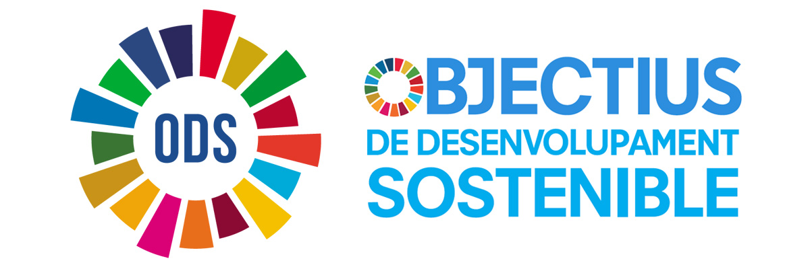
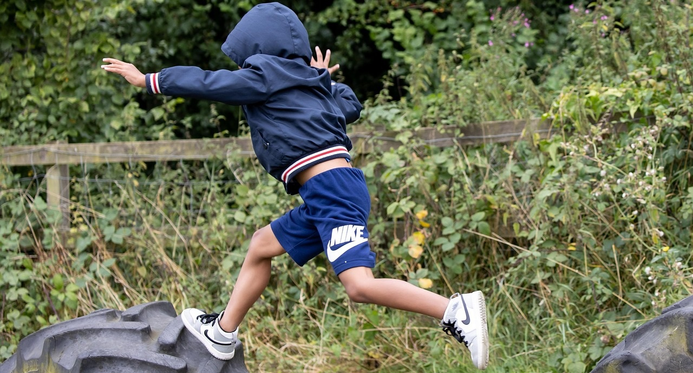

EDUCATION AND CULTURE AREA
ARCA TEMÀTICA's main line of work is aimed at people of all ages. Each activity is adapted to the knowledge and needs of each group.


ARCA TEMÀTICA was born from the union of a group of professionals from the worlds of education, culture, leisure and entertainment, in order to offer
the services and activities that most interest schools, organisations, associations, companies and public administrations.
Rigour, responsibility and seriousness are our basic working principles for delivering a sustainable, high-quality product.


At Arca we promote responsible artistic production, using conscious materials and efficient processes to create unique set design projects that respect the environment and our surroundings.

We hold the Biosphere certification, which backs our commitment to the fight against climate change.
Certificate no.: BAT 054/2022 RTI
We are convinced that outdoor activities that let us enjoy our rich cultural heritage are highly beneficial for cognitive development.
ARCA TEMÀTICA's main line of work is aimed at people of all ages. Each activity is adapted to the knowledge and needs of each group.

ARCA TEMÀTICA's Shows Area includes artists from a range of fields (music, theatre, film and circus) to create any kind of tailor-made show.

ARCA TEMÀTICA designs and offers a wide range of services and activities for fun and entertainment, always with a pedagogical foundation.
We have a large list of clients that reflects our long track record in the sector. The trust they place in us is the best reflection of the quality of our services and our commitment to excellence.